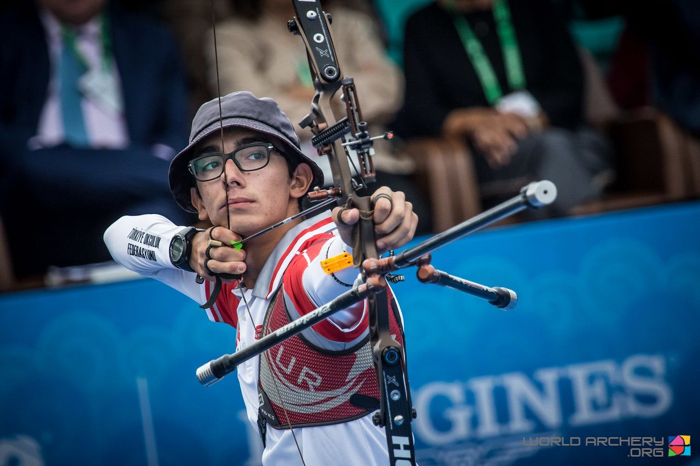
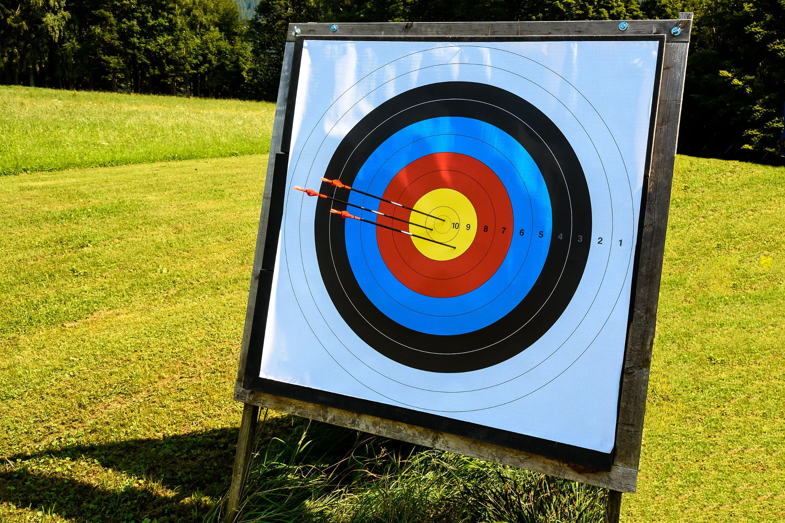
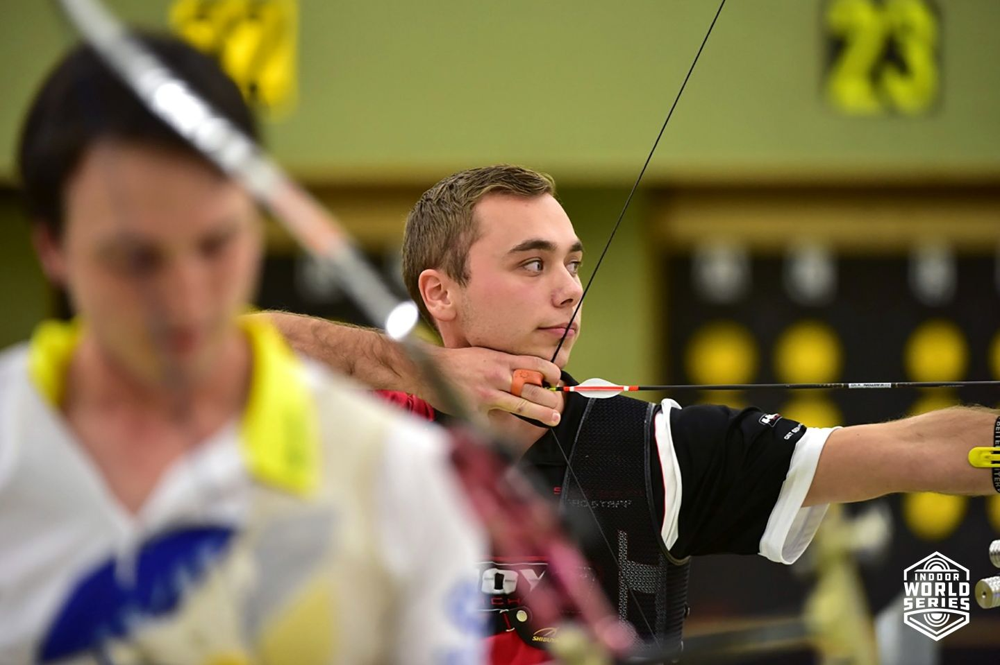
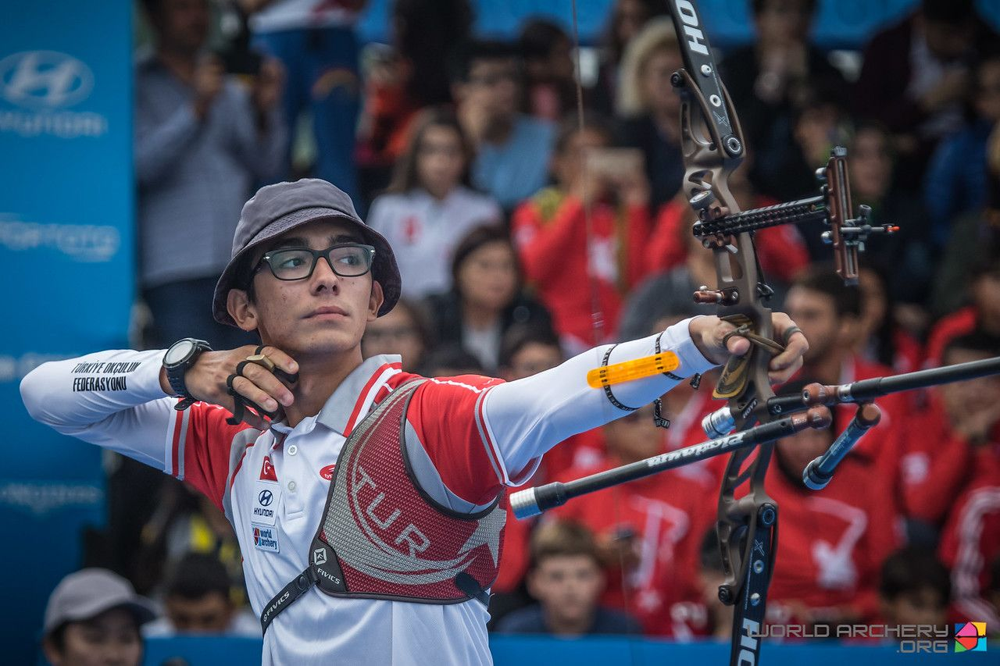
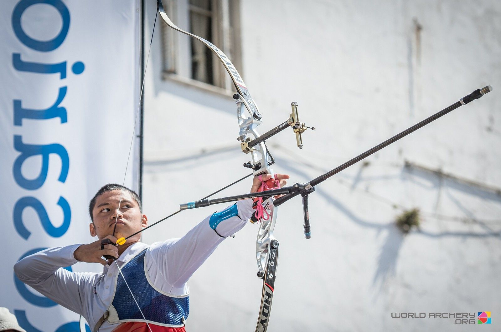
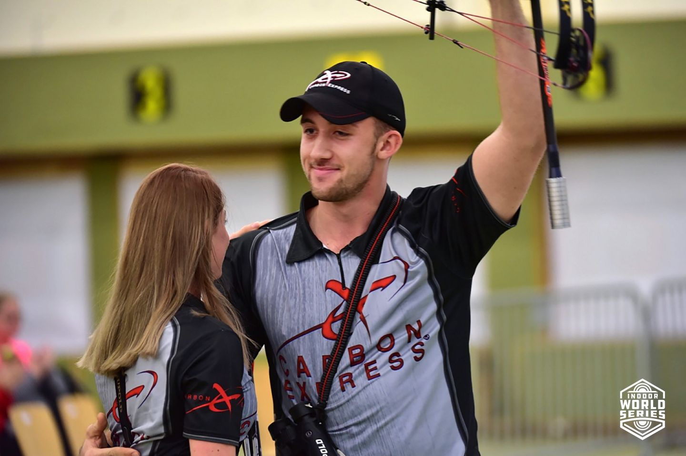

Target Archery
Target archery is the most recognisable format of modern archery. It takes place both outdoors and indoors, over distances of up to 90 metres and using the traditional five-colour, 10-ring target.
International target archery includes two bowstyles: recurve and compound. Recurve target archery is included on the Olympic Programme, compound target archery is featured at the World Games and both are included in the Paralympic Games.

Target archery is practised in clubs in over 150 countries around the world and is a fast growing sport.
World Archery international target archery events include the World Archery Championships, World Archery Indoor Championships, World Archery Youth Championships, World Archery Para Championships, Archery World Cup and Indoor Archery World Cup.
OUTDOOR TARGET ARCHERY
Recurve athletes shoot at targets set 70 metres away and compound athletes shoot at targets set 50 metres away. Athletes of both bowstyles shoot at a traditional yellow, red, blue, black and white target that scores 10 for the inner ring and one for the outer ring.
The recurve target is 122cm in diameter with a 10 ring 12.2cm in diameter.

The compound target is 80cm in diameter with a 10 ring 8cm in diameter. In international competition, compound targets only include the yellow, red and blue rings. This is to reduce the size of target mat needed for each target face, in order that each athlete has their own target to shoot at.
INDOOR TARGET ARCHERY

Recurve and compound athletes shoot at targets set 18 metres away.
Athletes of both bowstyles shoot at a traditional yellow, red, blue, black and white target that scores 10 for the inner ring and one for the outdoor ring. There is a smaller 10 ring, measuring 2cm in diameter, for compound athletes as opposed to the 4cm diameter recurve 10 ring.
In international competition, targets only include the yellow, red and blue rings and are arranged in vertical groups of three. Athletes shoot a maximum of one arrow at each target face at any one time.
ARCHERY AT THE OLYMPIC GAMES

Archery was first included in the Olympic Games in 1900. It was also featured on the programme in 1904, 1908 and 1920 before a hiatus until 1972 when it returned.
It has remained on the Olympic Programme ever since, with competition in men’s and women’s individual and team recurve archery.
COMPETITION FORMATS
Outdoor and indoor target archery includes individual, team and mixed team competitions at international events. World Archery also recognises a number of competition rounds not or no longer used at international events.
INDIVIDUAL COMPETITION FORMAT
Athletes shoot a qualification or ranking round to ascertain seedings in their division: bowstyle and gender. The ranking round consists of 72 arrows outdoors or 60 arrows indoors, cumulatively scored.
The athlete in each division who finishes with the most points is given the top seed, the athletes with the least the lowest seed.
Athletes then advance to eliminations and finals of head-to-head matches shot in brackets. In indoor competition, only the top 32 seeded athletes advance. In outdoor competition, the top 104 seeded athletes advance, while the top eight seeded athletes are given an automatic bye into the third round.

Recurve matches are decided using the set system. Athletes receive two set points for winning each set of three arrows. If both athletes score the same in a three-arrow set, they both receive one set point. The first athlete to reach six set points wins the match.
Compound matches are decided using cumulative scoring. Athletes shoot 15 arrows in five ends of three arrows. The athlete with the highest 15-arrow score wins the match.
If a recurve match is tied on five set points or a compound match is tied on cumulative score then the match is decided in a single-arrow shoot-off. Each athlete shoots one arrow and the arrow that lands closest to the middle wins the match.
If no winner can be decided, the process is repeated until a winner is found.
The elimination brackets advance until there are four athletes remaining to shoot the semifinals. The losers of the two semifinals compete in a bronze medal match while the winners of the two semifinals compete in the gold medal match to decide who wins the tournament.
TEAM AND MIXED TEAM COMPETITION FORMAT
As well as the individual competition, international events can also include team and mixed team competitions. (Mixed team competition is currently included in outdoor archery only.)
Teams comprise three athletes of the same division. It is usually the top scoring three athletes in qualification, however team managers may choose to substitute athletes.
Mixed teams comprise two athletes of the same bowstyle, one of each gender. It is usually the highest scoring athlete of each gender in qualification, however team managers may choose to substitute athletes.

Teams & mixed teams are seeded for their elimination matches using the total of the individual ranking round scores of their athletes.
Recurve team and mixed team matches are decided using the set system. Teams receive two set points for winning each set of six arrows (two each); mixed teams receive two set points for winning each set of four arrows (two each). If both teams or mixed teams score the same in a six- or four-arrow set, they both receive one set point. The first team or mixed team to reach five set points wins the match.
Compound team and mixed team matches are decided using cumulative scoring. Teams shoot 24 arrows in four ends of six arrows; the team with the highest 24-arrow total wins the match. Mixed teams shoot 16 arrows in four ends of four arrows; the mixed team with the highest 16-arrow total wins the match.
If a recurve team or mixed team match is tied on four set points or a compound match is tied on cumulative score then the match is decided in a shoot-off. Each athlete in the team or mixed team shoots one arrow. The team with the highest score wins the match.
If no winner can be decided with each team’s arrow that is closest to the centre, then the second closest arrows are decided, then the third. If no winner can be decided, the process is repeated until a winner is found.
OTHER COMPETITION FORMATS
While no longer used in international competition, the World Archery 1440 Round was previously used as the qualification round. Also then called the FITA Round, it consists of shooting 36 arrows at 90, 70, 50 and 30 metres for men and 70, 60, 50 and 30 metres for women.
The 1440 Round and other former international events are included in the World Archery rulebook.
National archery federations around the world use variations of the World Archery rules and traditional rules in their own countries, making archery one of the most diverse sports for competition formats in the world.
#Article from World Archery
Read More
> Field Archery> 3D Archery
> Traditional Archery
> Clout Archery
> Flight Archery